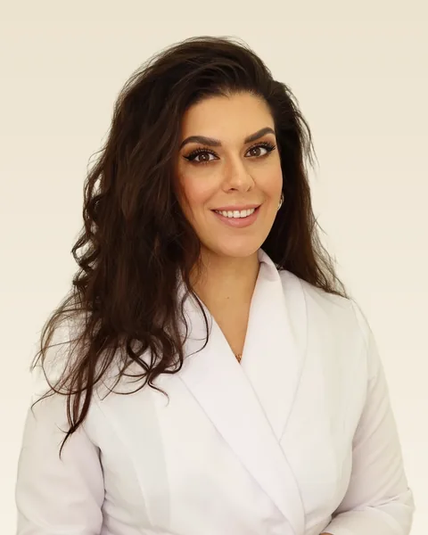
Главный врач клиники «Версаль». Исправление прикуса у взрослых и подростков. Работает с системами Damon, керамическими и сапфировыми брекетами, элайнерами Star Smile. Постоянное повышение квалификации в России и за рубежом.
Опыт работы: с 2013 года
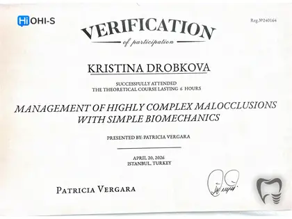
Курс «Management of Highly Complex Malocclusions», OHI-S, Стамбул, 2026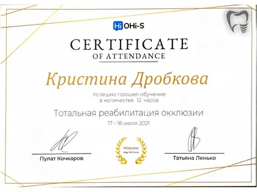
Курс «Тотальная реабилитация окклюзии», OHI-S, Москва, 2021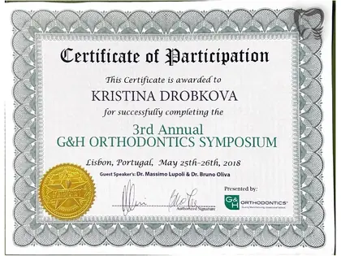
Симпозиум G&H Orthodontics, Лиссабон, 2018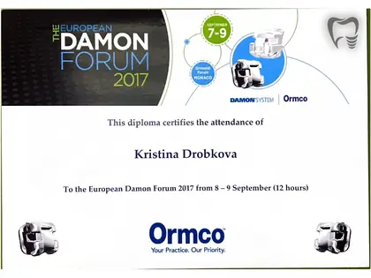
European Damon Forum, Монако, 2017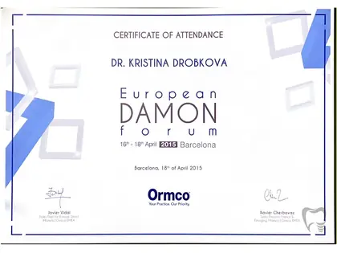
European Damon Forum, Барселона, 2015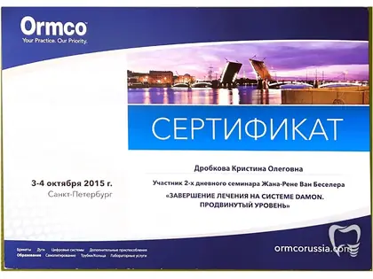
Семинар «Завершение лечения на системе Damon. Продвинутый уровень», Ormco, 2015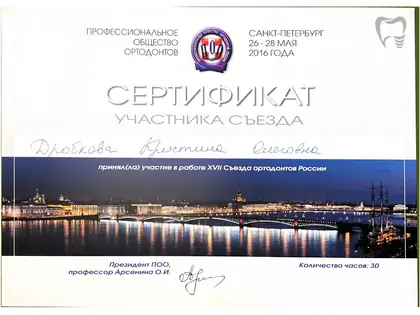
XVII Съезд ортодонтов России, Санкт-Петербург, 2016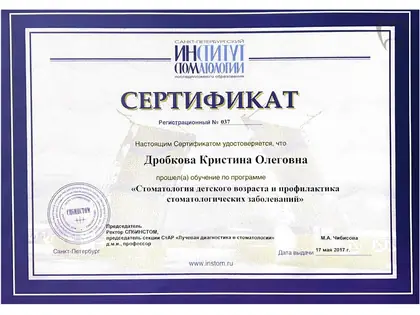
Курс «Стоматология детского возраста и профилактика», СПбИНСТОМ, 2017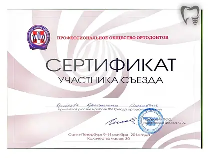
Сертификат участника XVI Съезда ортодонтов России, Санкт-Петербург, 2014 (30 часов)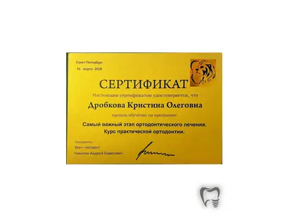
Курс практической ортодонтии «Самый важный этап ортодонтического лечения», Санкт-Петербург, 2018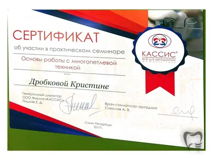
Практический семинар «Основы работы с многопетлевой техникой», КАССИС, Санкт-Петербург, 2017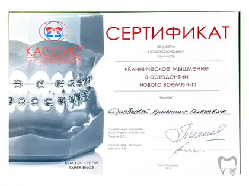
Семинар «Клиническое мышление в ортодонтии нового времени», КАССИС, Санкт-Петербург, 2016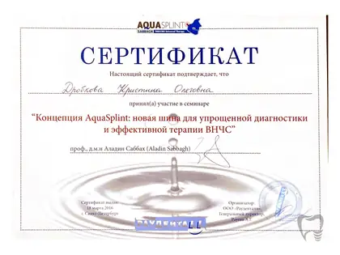
Семинар «AquaSplint: диагностика и терапия ВНЧС», проф. Аладин Саббах, Санкт-Петербург, 2016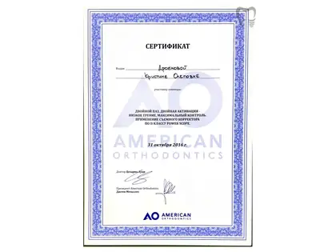
Семинар «Применение съёмного корректора по II классу Power Scope», American Orthodontics, 2016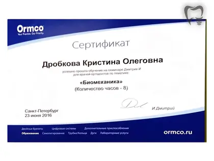
Семинар «Биомеханика», Ormco, Санкт-Петербург, 2016 (8 часов)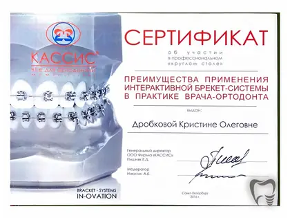
Круглый стол «Интерактивная брекет-система In-Ovation в практике врача-ортодонта», КАССИС, 2016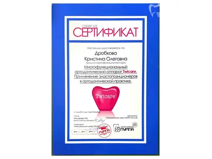
Сертификационный курс «Ортодонтический аппарат Twicare. Эластопозиционеры в ортодонтической практике», 2016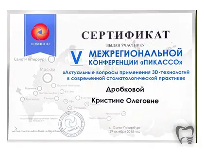
V межрегиональная конференция «Пикассо»: 3D-технологии в стоматологической практике, Санкт-Петербург, 2015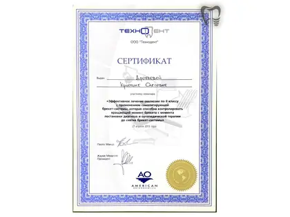
Семинар «Эффективное лечение окклюзии по II классу самолигирующей брекет-системой», American Orthodontics, 2013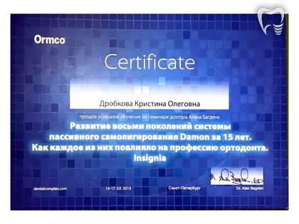
Семинар доктора Алана Багдена «Восемь поколений системы Damon. Insignia», Ormco, Санкт-Петербург, 2013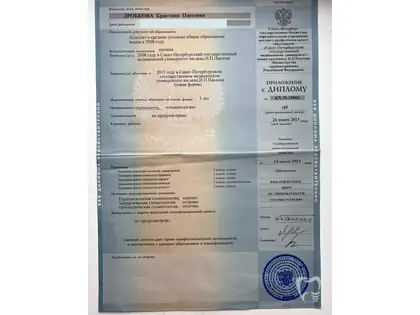
Диплом врача-стоматолога, Санкт-Петербургский государственный медицинский университет им. И. П. Павлова, 2013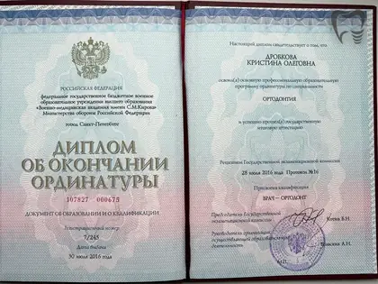
Диплом об окончании ординатуры по специальности «Ортодонтия», Военно-медицинская академия им. С. М. Кирова, 2016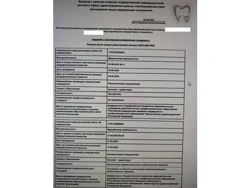
Свидетельство о периодической аккредитации по специальностям «Ортодонтия» и «Организация здравоохранения и общественное здоровье», 2025Красивая улыбка — это всегда системная работа: правильный прикус сохраняет здоровье суставов, дёсен и эмали на десятилетия вперёд. Я не назначаю брекеты без полной диагностики ТРГ и КТ — лечение должно быть обоснованным.
Лечение брекетами Damon, элайнерами Star Smile. Фото «до и после», сроки лечения.
Фото в этом разделе — реальные работы врачей клиники, публикуются с письменного согласия пациентов. Результат индивидуален и зависит от клинической ситуации. Имеются противопоказания, необходима консультация специалиста.
Цифровая диагностика, прозрачные цены и гарантия по договору — для каждого пациента.
Перезвоним за 15 минут.